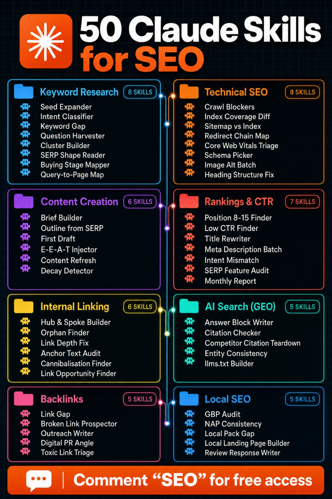
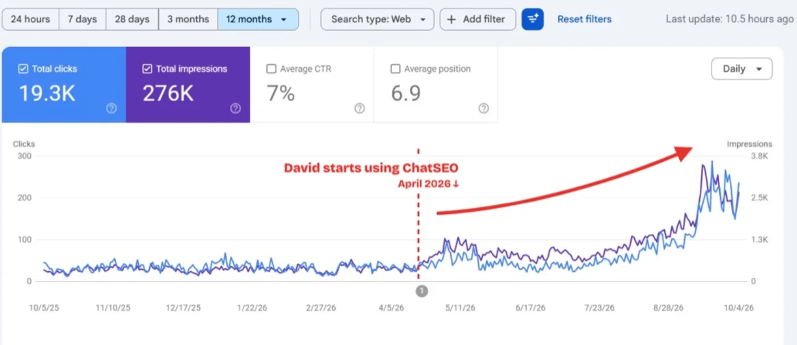

ChatSEO Playbooks / Free, nothing gated
50 Claude Skills for SEO
TL;DR
- 50 reusable Claude Skills covering the entire SEO cycle, from the first keyword to the monthly report. See the map.
- Each skill tells Claude which data to use, the steps to follow, the exact output table, and the one action to take next.
- Drop the folder in, restart Claude Code, and ask normally. Claude picks the right skill on its own. 2-minute setup.
- Most skills read Search Console, volumes or backlinks. Without that data Claude guesses. Here's how to plug it in.
- All 50 are below, ready to copy. Or download them as one zip.

The map: 50 skills, 8 categories
SEO teams spend hours on the same jobs every week. Each of those jobs is a skill here.
A Claude Skill is one file, SKILL.md: a name, one line saying when to use it, and the instructions. Claude reads only the one-line descriptions until your request matches one, then loads that skill. So 50 skills cost you nothing until you need one.

Every skill follows the same shape:
- The data Claude needs. Which export, which date range, which filter.
- A repeatable workflow. The steps, in order, with the thresholds that separate signal from noise.
- An output template. The exact columns of the table, capped, so you can act on it.
- The one action to take next. Not a list of ten. One.
The 2-minute setup
- Download the zip and unzip it at the root of your site's folder. The skills land in
.claude/skills/. To use them in every project, unzip in~/.claude/instead. - Restart Claude Code.
- Ask normally: "which of my pages should I push first?" loads
position-8-15-finder. You can also name a skill: "use title-rewriter on my top 20 pages".
Download all 50 skills (.zip) 50 SKILL.md files, already in the right folders
1Keyword Research
Expand seed terms, classify search intent and map every query to the right page. 8 skills.
seed-expander · Turn one seed keyword into a full keyword universe with volume and difficulty.
--- name: seed-expander description: Turn one seed keyword into a full keyword universe with volume and difficulty. Use at the start of any new topic. --- Take the seed. Expand via modifiers, questions, comparisons, alternatives, and long-tail variants. For each keyword: volume | difficulty | intent | whether the site already ranks for it. Drop anything with zero volume or an intent the site cannot serve. Cap the output at 50 keywords. End with the single keyword to build the pillar page around.
intent-classifier · Classify keywords by search intent so you build the right page type.
--- name: intent-classifier description: Classify keywords by search intent so you build the right page type. Use before any content decision. --- For each keyword, classify as informational, commercial investigation, transactional, or navigational. Base the call on what actually ranks in the SERP, not on the wording of the keyword. Columns: keyword | intent | evidence from the SERP | correct page type. Flag any keyword where the SERP shows mixed intent: those need a hybrid page or should be skipped. End with the one keyword whose intent the site is currently getting wrong.
keyword-gap · Find keywords a competitor ranks for that you do not.
--- name: keyword-gap description: Find keywords a competitor ranks for that you do not. Use for competitive research. --- Pull the competitor's ranking keywords. Remove anything the site already ranks top 20 for, and anything branded to them. Keep only keywords the site could credibly rank for given its existing topical authority: say so if a keyword is out of reach. Columns: keyword | their position | volume | intent | the page you would need to build. Cap at 25. End with the one keyword to target this month.
question-harvester · Collect the real questions people ask about a topic.
--- name: question-harvester description: Collect the real questions people ask about a topic. Use before writing an FAQ or GEO content. --- Gather questions from People Also Ask, GSC queries containing question words, and forum and Reddit threads on the topic. Deduplicate by meaning, not by wording. For each: question | volume or frequency signal | whether the site already answers it | best format for the answer. Cap at 20 questions. End with the one unanswered question worth a dedicated page.
cluster-builder · Turn a messy keyword export into clean topic clusters.
--- name: cluster-builder description: Turn a messy keyword export into clean topic clusters. Use when handed a CSV of hundreds of keywords. --- Read the export. Cluster by SERP overlap where available, otherwise by shared intent and entity: never by string similarity alone. One cluster = one page. If two clusters would produce near-identical pages, merge them. For each cluster: cluster name | primary keyword | supporting keywords | total volume | page type to build. Cap at 15 clusters. Say how many keywords you dropped and why. End with the one cluster with the best volume-to-difficulty ratio.
serp-shape-reader · Read what content format actually ranks for a keyword.
--- name: serp-shape-reader description: Read what content format actually ranks for a keyword. Use before writing anything. --- Analyse the top 10 for the keyword. Record: dominant format (listicle, guide, tool, product, video, forum), median word count, and how many results are from the same site type. If 6+ results share one format, that format is mandatory: say so. Note which SERP features occupy space above the fold. Do not summarise the content of each result; report the pattern. End with the one format decision for this page.
buying-stage-mapper · Map keywords to funnel stage so content matches where the buyer is.
--- name: buying-stage-mapper description: Map keywords to funnel stage so content matches where the buyer is. Use when planning a content calendar. --- For each keyword, assign a stage: unaware, problem-aware, solution-aware, product-aware, or ready to buy. For each: keyword | stage | what the reader needs at that moment | the CTA that fits. Flag any stage with no coverage on the site: that gap is the finding. Do not assign a hard-sell CTA to a problem-aware keyword. End with the one funnel stage to fill first.
query-to-page-map · Map which page Google actually serves for each of your target queries.
--- name: query-to-page-map description: Map which page Google actually serves for each of your target queries. Use to catch mismatches. --- For each target query, pull the URL GSC reports as ranking. Compare it to the URL you intended to rank. Flag every mismatch. Columns: query | intended URL | actual URL | position | why Google chose differently. A mismatch usually means intent or internal linking, not keyword density. End with the one query where the wrong page is ranking and it matters most.

2Technical SEO
Find crawl blockers, diff index coverage and fix redirects, schema and Core Web Vitals. 8 skills.
crawl-blockers · Find pages blocked from indexing by robots.txt, noindex, or canonical conflicts.
--- name: crawl-blockers description: Find pages blocked from indexing by robots.txt, noindex, or canonical conflicts. Use for a technical audit or when pages are missing from Google. --- Pull every indexable URL from the sitemap. For each, check: robots.txt disallow, meta robots noindex, canonical pointing elsewhere, and GSC coverage state. Report ONLY conflicts: a URL that is submitted but blocked, or canonicalised to a page that is itself noindexed. Columns: URL | blocker | where it is set | traffic at stake (GSC clicks, last 28d). Cap at 20 rows, sorted by clicks lost. End with the single blocker fix that unlocks the most traffic.
index-coverage-diff · Compare GSC index coverage week over week and explain what changed.
--- name: index-coverage-diff description: Compare GSC index coverage week over week and explain what changed. Use for weekly technical monitoring. --- Pull GSC index coverage counts by state for this week and the previous week. Report only states that moved more than 5% or 50 URLs, whichever is larger. For each: state | last week | this week | delta | most likely cause given what else changed. Flag any move into 'Crawled - currently not indexed' as a quality signal, not a technical one. End with the one state to investigate.
sitemap-vs-index · Find sitemap URLs Google has not indexed, and say why.
--- name: sitemap-vs-index description: Find sitemap URLs Google has not indexed, and say why. Use when new pages are not appearing in search. --- Diff the sitemap URL set against GSC indexed URLs. For each missing URL, classify the reason: discovered-not-crawled, crawled-not-indexed, duplicate, soft 404, or blocked. Group by reason and count. Show 3 example URLs per reason, not all of them. Crawled-not-indexed means thin or duplicate content: say so plainly rather than suggesting a resubmit. End with the one reason group to fix.
redirect-chain-map · Find redirect chains and loops wasting crawl budget and link equity.
--- name: redirect-chain-map description: Find redirect chains and loops wasting crawl budget and link equity. Use during a migration or technical audit. --- Crawl the URL list and follow every 3xx to its final destination. Report only chains of 2+ hops, and any loop. Columns: start URL | hops | final status | inbound internal links | inbound external links. Sort by external links, because that is where equity is leaking. End with the one chain to flatten first.
core-web-vitals-triage · Rank Core Web Vitals failures by the traffic they actually cost.
--- name: core-web-vitals-triage description: Rank Core Web Vitals failures by the traffic they actually cost. Use when CWV is failing or a speed audit is requested. --- Pull CWV field data by URL group. Join each group to its GSC clicks over the last 28 days. Ignore any failing group under 1% of total clicks: it is noise. For each remaining group: metric failing | current value | threshold | clicks affected | the one technical cause. Do not list generic advice like "optimise images" without naming the specific asset or script. End with the single template to fix first.
schema-picker · Choose the right schema type and generate valid JSON-LD.
--- name: schema-picker description: Choose the right schema type and generate valid JSON-LD. Use when adding structured data. --- Identify the page type, then select the schema type that actually earns a rich result for it: not every type does. Generate valid JSON-LD using only fields the page genuinely contains. Never fabricate ratings, prices, or dates. State which rich result this makes the page eligible for, and that eligibility is not a guarantee. Validate required vs recommended properties and flag anything missing. End with the one page to add schema to first.
image-alt-batch · Write alt text for images missing it, for accessibility and image search.
--- name: image-alt-batch description: Write alt text for images missing it, for accessibility and image search. Use in batches. --- For each image, write alt text under 125 characters describing what the image shows in context. Decorative images get empty alt, not a description: identify those. Include the target keyword only where the image genuinely depicts it. Columns: image | page | current alt | new alt. End with the one page whose images could realistically earn image-search traffic.
heading-structure-fix · Fix broken heading hierarchy that confuses crawlers and readers.
--- name: heading-structure-fix description: Fix broken heading hierarchy that confuses crawlers and readers. Use during on-page audits. --- For each page, extract the heading tree. Flag: multiple H1s, skipped levels, headings used for styling, and H2s that do not describe their section. Columns: URL | issue | current heading | corrected heading. Rewrite headings to carry the query variant they should target, without keyword stuffing. Cap at 15 pages. End with the one page whose structure is costing it the most.

3Content Creation
Build briefs from the SERP, write first drafts and refresh pages before they decay. 6 skills.
brief-builder · Write a content brief specific enough that the draft is not generic AI mush.
--- name: brief-builder description: Write a content brief specific enough that the draft is not generic AI mush. Use before writing any page. --- Analyse the top 10 for the primary keyword. Build a brief containing: target keyword and cluster, search intent, mandatory format, required H2s with the gap each fills, entities and facts that must appear, the angle no competitor has taken, internal links to include, and the CTA. Every required section must state WHY it is required, citing what ranks. Ban generic sections: no "Introduction", no "Conclusion", no "What is X" unless the SERP demands it. End with the one angle that differentiates this page.
outline-from-serp · Build an H2 outline from what ranks plus what nobody covers.
--- name: outline-from-serp description: Build an H2 outline from what ranks plus what nobody covers. Use after the brief. --- Extract every H2 and H3 from the top 10 results. Cluster them by topic and count frequency. Sections appearing in 5+ results are table stakes: include them. Sections in 1-2 results are optional. Then name what NO result covers but the searcher needs. That is the differentiator. Output the outline with a one-line note per section on what it must contain. End with the one section that will make this page better than the current number one.
first-draft · Write the first draft from an approved brief, in the site's voice.
--- name: first-draft description: Write the first draft from an approved brief, in the site's voice. Use only after brief-builder. --- Read the brief and follow it exactly: do not add sections it did not ask for. Open with the answer, not with context-setting. No "In today's digital landscape". Every claim gets a specific number, example, or source. If you cannot source it, cut it. Match sentence length to the site's existing content. Short sentences. Plain words. End the draft with the CTA from the brief and nothing after it.
eeat-injector · Add real experience and expertise signals to a draft.
--- name: eeat-injector description: Add real experience and expertise signals to a draft. Use before publishing anything YMYL or competitive. --- Read the draft. Find every claim stated without evidence. For each, specify what would make it credible: a named source, a first-hand result, a screenshot, a date, a methodology note, or an author credential. Columns: claim | current evidence | what to add | where to get it. Do not invent experience the author does not have: mark those claims for cutting instead. End with the one addition that most raises the page's credibility.
content-refresh · Build a rewrite plan for a page that is losing traffic.
--- name: content-refresh description: Build a rewrite plan for a page that is losing traffic. Use when a page decays. --- Pull the page's GSC data for the last 90 days vs the prior 90. Identify which queries lost position and which are new. Compare the page to what currently ranks top 3: what do they cover that it does not, and what has changed since publication. Output: sections to add, sections to cut, facts to update, title and meta to rewrite. If the page lost to a different content format entirely, say so: a refresh will not save it. End with the one change to make first.
decay-detector · Find pages losing traffic before the decline becomes serious.
--- name: decay-detector description: Find pages losing traffic before the decline becomes serious. Use weekly. --- Compare the last 28 days to the prior 28, and to the same period last year to control for seasonality. Flag pages down more than 20% that are not explained by seasonality. For each: URL | clicks then | clicks now | position change | whether it lost position or lost impressions. Losing impressions at a stable position means the SERP changed, not your page: distinguish the two. End with the one page to refresh.

4Rankings & CTR
Find pages stuck at position 8-15, rewrite titles that don't get clicks and report it monthly. 7 skills.
position-8-15-finder · Find pages sitting at position 8-15 that deserve a push.
--- name: position-8-15-finder description: Find pages sitting at position 8-15 that deserve a push. Use first: this is the fastest win on the list. --- Pull GSC queries from the last 28 days with average position between 8 and 15 and impressions above 100. Rank by impressions multiplied by the CTR you would gain moving to position 3. Columns: URL | query | position | impressions | estimated clicks gained | the one change to make. The change must be specific: a section to add, a link to build, a title to rewrite. Not "improve the content". Cap at 10 rows. End with the single page to push first.
low-ctr-finder · Find pages ranking in the top 10 with a CTR far below expectation.
--- name: low-ctr-finder description: Find pages ranking in the top 10 with a CTR far below expectation. Use monthly. --- Pull GSC pages in positions 1-10. Compare each page's CTR to the benchmark for its position. Flag only pages more than 40% below benchmark with over 200 impressions. Columns: URL | position | actual CTR | expected CTR | clicks left on the table | likely cause. A position-4 page with 1.2% CTR is a packaging problem, not a ranking problem: say which it is. End with the one page to rewrite.
title-rewriter · Rewrite titles for pages ranking well with poor CTR.
--- name: title-rewriter description: Rewrite titles for pages ranking well with poor CTR. Use monthly. --- Pull GSC pages in positions 1-10 with CTR below the expected rate for their position. For each, write 3 title options under 60 characters that carry the primary query, a reason to click, and no clickbait. Columns: URL | position | current CTR | expected CTR | current title | 3 options. Cap at 10 pages, sorted by impressions. End with the one title to ship today.
meta-description-batch · Write meta descriptions for pages that lack one or have a weak one.
--- name: meta-description-batch description: Write meta descriptions for pages that lack one or have a weak one. Use in batches. --- For each URL, write a meta description of 140-160 characters containing the primary query, the specific benefit, and a verb. Do not restate the title. Do not use "Learn more about". Skip any page where Google is already rewriting the description to something better: say which those are. Cap at 20 URLs. End with the one page where a better description would earn the most clicks.
intent-mismatch · Find pages ranking for queries they were not built to serve.
--- name: intent-mismatch description: Find pages ranking for queries they were not built to serve. Use when a page has impressions but no clicks. --- Pull GSC queries per page. For each page, compare the intent of its top queries to the page's actual type. Flag pages where the dominant query intent does not match the page type: a product page pulling informational queries, or a blog post pulling transactional ones. Columns: URL | page type | dominant query intent | impressions | clicks | CTR. Cap at 10 pages. End with the one page to repurpose.
serp-feature-audit · Find SERP features you could realistically win.
--- name: serp-feature-audit description: Find SERP features you could realistically win. Use to capture clicks without moving position. --- For each target keyword, list which SERP features appear: featured snippet, PAA, image pack, video, local pack, AI Overview. For each feature the site does not hold, judge whether it is winnable given current position: anything outside the top 10 is not. Columns: keyword | feature | current holder | your position | the specific change needed to win it. Cap at 15. End with the one feature to go after.
monthly-report · Produce a monthly SEO report a client will actually read.
--- name: monthly-report description: Produce a monthly SEO report a client will actually read. Use at month end. --- Pull clicks, impressions, average position and indexed pages for the month and the prior month. Structure: what moved and by how much, what we shipped, what it produced, what is next. Every number carries its absolute value alongside the percentage. Every win names the action that caused it. No screenshots of dashboards. No metric without a decision attached to it. Cap at one page. End with the one priority for next month.
5Internal Linking
Build hubs, rescue orphan pages and point the right links at your money pages. 6 skills.
hub-spoke-builder · Turn a topic cluster into a linked hub-and-spoke structure.
--- name: hub-spoke-builder description: Turn a topic cluster into a linked hub-and-spoke structure. Use after cluster-builder. --- Take the cluster. Designate one pillar page and assign every other page as a spoke. Specify: pillar links down to every spoke, every spoke links up to the pillar, and spokes link sideways only where topically adjacent. Output the full link map with the anchor text for each link. Flag any spoke that duplicates the pillar's intent: that one should be merged, not linked. End with the one link that completes the structure.
orphan-finder · Find pages with no internal links pointing to them.
--- name: orphan-finder description: Find pages with no internal links pointing to them. Use during a site audit. --- Build the internal link graph from a crawl. Flag every indexable URL with zero inbound internal links. Join each orphan to its GSC impressions: an orphan with impressions is a real loss, one with none may deserve to be cut. Columns: orphan URL | impressions | topic | 3 existing pages that should link to it. Cap at 20. End with the one orphan to link first.
link-depth-fix · Find pages buried more than 3 clicks from the homepage.
--- name: link-depth-fix description: Find pages buried more than 3 clicks from the homepage. Use when deep pages underperform. --- Crawl from the homepage and record click depth for every indexable URL. Flag pages at depth 4+ that have GSC impressions: those are earning attention despite being buried. Columns: URL | depth | impressions | the shallow page that should link to it. Do not recommend adding links to the main navigation for every page: name the one or two that deserve it. End with the one page to surface.
anchor-text-audit · Audit internal anchor text for over-optimisation and vagueness.
---
name: anchor-text-audit
description: Audit internal anchor text for over-optimisation and vagueness. Use during a link audit.
---
Pull every internal anchor pointing to each target URL. Group by anchor text.
Flag two problems: generic anchors ("click here", "read more") and exact-match repetition above 40% of a page's inbound anchors.
Columns: target URL | anchor | count | share | replacement anchor.
End with the one target URL whose anchor profile needs fixing most.
cannibalisation-finder · Find pages competing against each other for the same query.
--- name: cannibalisation-finder description: Find pages competing against each other for the same query. Use when rankings fluctuate or traffic is flat. --- Pull GSC query-page pairs for the last 90 days. Flag any query where 2+ URLs each took impressions. Only report cases where the alternate URL took over 10% of impressions: below that it is noise. Columns: query | URLs | impressions split | clicks | which URL should win and why. Recommend one of: merge, differentiate intent, or canonicalise. Never all three. End with the one query costing the most clicks.
link-opportunity-finder · Find existing pages that should link to your money page.
--- name: link-opportunity-finder description: Find existing pages that should link to your money page. Use to push a specific URL. --- Take the target URL. Find every page on the site that mentions its topic or ranks for a related query but does not link to it. For each, quote the exact sentence where the link belongs and propose the anchor text. Columns: source page | its authority signal | sentence to link from | proposed anchor. Cap at 15 opportunities, sorted by the source page's own traffic. End with the single highest-value link to add.
6Backlinks
Find link gaps, prospect broken links and write outreach people actually answer. 5 skills.
link-gap · Find sites linking to competitors but not to you.
--- name: link-gap description: Find sites linking to competitors but not to you. Use for link prospecting. --- Pull backlink profiles for 3 competitors. Keep only referring domains linking to 2+ of them but not to you. Remove directories, scrapers, and anything with no real traffic. Columns: domain | authority | which competitors it links to | the page it linked to | why it would link to you. Cap at 25 prospects. End with the one prospect most likely to say yes.
broken-link-prospector · Find broken pages on relevant sites you could replace with your content.
--- name: broken-link-prospector description: Find broken pages on relevant sites you could replace with your content. Use for outreach. --- Find pages on target sites that link out to URLs returning 404. Keep only broken targets whose topic matches content you already have or could write in a day. Columns: host page | broken URL | its former topic | your replacement URL | inbound links the broken URL still has. End with the one replacement worth pitching first.
outreach-writer · Write outreach emails that get replies.
--- name: outreach-writer description: Write outreach emails that get replies. Use after any prospecting skill. --- For each prospect, write an email under 120 words. Reference the specific page and what is actually on it, state the value in one sentence, make one ask. No compliments about their "amazing blog". No "I hope this email finds you well". No follow-up threat. Subject line under 45 characters, lowercase, specific. End with the one prospect to send to first.
digital-pr-angle · Turn your own data into a story a journalist would actually cover.
--- name: digital-pr-angle description: Turn your own data into a story a journalist would actually cover. Use for link earning. --- Take the available proprietary data. Find the angle that is genuinely newsworthy: a counterintuitive finding, a ranking or league table, a trend with a number attached, or a seasonal hook. State the headline a journalist would write, the single statistic that carries it, and the 3 publications that cover this beat. If the data does not support a real story, say so: do not manufacture one. End with the one angle to pitch.
toxic-link-triage · Decide whether a suspicious backlink profile needs action.
--- name: toxic-link-triage description: Decide whether a suspicious backlink profile needs action. Use when links look spammy. --- Classify referring domains as: natural, low quality but harmless, or genuinely manipulative. Google ignores most spam automatically: recommend disavow only for links that are paid, part of a scheme, or arrived alongside a manual action. Columns: domain | classification | evidence | action. If there is no manual action and no pattern of paid links, recommend doing nothing and say why. End with the one decision: disavow or leave it.
7AI Search (GEO)
Check who ChatGPT cites, work out why it's not you and write answer blocks it can quote. 5 skills.
answer-block-writer · Write passages an AI engine can lift and cite.
--- name: answer-block-writer description: Write passages an AI engine can lift and cite. Use on every page you want cited. --- For each target question, write a 40-60 word answer block that stands alone with no surrounding context, states the answer in the first sentence, includes one specific number or named entity, and reads as a complete quote. Place it directly under a heading phrased as the question. No hedging, no "it depends" openers, no marketing language. End with the one page to add an answer block to first.
citation-checker · Check whether AI engines cite your brand for your key questions.
--- name: citation-checker description: Check whether AI engines cite your brand for your key questions. Use monthly. --- Take the 10 questions your buyers actually ask. Query each against ChatGPT, Claude and Perplexity. Record: are you cited, which competitors are, which source URL the engine used, and how your brand is described. Columns: question | cited yes/no | competitors cited | source used. Do not treat one absent citation as a trend: note the sample size. End with the one question where a citation is most winnable.
competitor-citation-teardown · Work out why an AI engine cites a competitor instead of you.
--- name: competitor-citation-teardown description: Work out why an AI engine cites a competitor instead of you. Use after citation-checker. --- Take a question where a competitor is cited. Fetch the exact page the engine used. Compare it to your equivalent page on: directness of the answer in the first 100 words, presence of a quotable standalone passage, structured data, freshness date, named author, and third-party corroboration elsewhere on the web. Columns: signal | their page | your page | gap. End with the one change that would make your page the better citation.
entity-consistency · Check that AI engines describe your brand accurately and consistently.
--- name: entity-consistency description: Check that AI engines describe your brand accurately and consistently. Use quarterly. --- Ask each engine to describe the brand, its category, its pricing, and its main alternatives. Compare answers against the truth. Flag every inaccuracy and where the engine likely picked it up. Columns: claim made | accurate? | likely source | correction route. Corrections come from fixing the source, not from prompting the engine: say which source to fix. End with the one inaccuracy to correct first.
llms-txt-builder · Generate an llms.txt that tells AI crawlers what matters on your site.
--- name: llms-txt-builder description: Generate an llms.txt that tells AI crawlers what matters on your site. Use once, then maintain. --- Build llms.txt listing the site's purpose in one line, then the pages that genuinely represent it: docs, pricing, key guides, and about. One line per URL with a short description of what it answers. Exclude blog archives, tags, and thin pages. Keep it under 50 URLs: this is a curation, not a sitemap. Note that adoption is not universal and this is a low-cost bet, not a ranking factor. End with the one page that most deserves to be in it.
8Local SEO
Audit your Google Business Profile, fix NAP consistency and close the local pack gap. 5 skills.
gbp-audit · Audit a Google Business Profile for completeness and ranking signals.
--- name: gbp-audit description: Audit a Google Business Profile for completeness and ranking signals. Use for any local business. --- Check the profile for: primary and secondary categories, full description, hours including holiday hours, service area, attributes, products or services listed, photo count and recency, Q&A, and post frequency. Columns: element | current state | impact on local ranking | fix. Category choice outranks almost everything else: check it first and say if it is wrong. End with the one element to fix today.
nap-consistency · Find name, address and phone inconsistencies across the web.
--- name: nap-consistency description: Find name, address and phone inconsistencies across the web. Use before any local campaign. --- Collect the business NAP as listed on the site, GBP, and the major directories and aggregators. Compare against the canonical version character by character: abbreviations, suite numbers, and phone formats all count. Columns: source | name | address | phone | mismatch | how to correct it. End with the one citation to correct first, weighted by the directory's authority.
local-pack-gap · Work out why a competitor outranks you in the map pack.
--- name: local-pack-gap description: Work out why a competitor outranks you in the map pack. Use when local rankings stall. --- Compare your GBP to the top 3 map pack competitors on: primary category, review count, average rating, review recency, photo count, post frequency, proximity to the searcher, and website relevance for the query. Columns: signal | you | competitor 1 | competitor 2 | competitor 3 | gap. Proximity cannot be changed: if that is the whole gap, say so honestly. End with the one closable gap.
local-landing-page-builder · Build a location page that is not thin duplicate content.
--- name: local-landing-page-builder description: Build a location page that is not thin duplicate content. Use when targeting multiple cities. --- For the target location, produce a page outline containing: locally specific service detail, named neighbourhoods or districts served, a local case study or customer, location-specific FAQs, embedded map, and NAP. At least 40% of the body must be content that could not appear on any other location page. Name exactly which sections carry that. If you cannot find enough local specifics, say the page should not be built. End with the one local detail that makes this page unique.
review-response-writer · Write responses to customer reviews that help local ranking.
--- name: review-response-writer description: Write responses to customer reviews that help local ranking. Use weekly. --- For each review, write a response under 60 words. Thank by name, address the specific point raised, and where natural include the service and city once. Negative reviews: acknowledge, take it offline with a contact route, never argue, never blame the customer. Do not use the same opening line twice across responses. End with the one review that needs a reply today.
The part the skills can't do alone
The honest gap. A skill tells Claude what to do with your Search Console, your volumes and your backlinks. It can't fetch them. Ask Claude which page to push without that data and it guesses from its training, confidently. Connect the ChatSEO MCP (Pro plan) and every skill reads the real numbers: Search Console, keyword volumes, backlinks, the live Google results and competitor pages. Try ChatSEO.app free for 7 days.
claude mcp add --transport http chatseo https://api.chatseo.app/mcp
Then type /mcp in Claude Code to log in once.
Where this breaks
- Skills are process, not judgement. They find the pages and write the first pass. You still decide what ships.
- Small sites get small tables. Under a few hundred impressions a month, most thresholds return nothing. Start with content and technical skills.
- A skill only fires when its description matches. If Claude doesn't pick the right one, name it.
- AI search skills sample, they don't measure. One missing citation is not a trend. The skills say so; believe them.
What I'd do tomorrow
- Connect Search Console and the ChatSEO MCP before running a single skill.
- Run
position-8-15-finder. Push the one page it names. - Run
low-ctr-finder, thentitle-rewriteron what it finds. - Run
crawl-blockersandsitemap-vs-indexonce, fix only what blocks pages that matter. - Run
decay-detectorevery Monday andmonthly-reportat month end. - Add
citation-checkermonthly once your money pages rank.
Research. Fix. Write. Push. Link. Get cited. In that order, because each step works on what the previous one left behind.